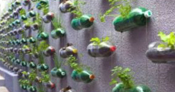

Projeto Arborização do CETI - Hortas Suspensas
Esse projeto foi desenvolvido enquato eu e meus colegas estudavamos no 1° ano do ensino médio para a disciplina de meio ambiente.
Sumário
Introducão 1. Realização do projeto 1.1 Como cada aluno pode contribuir 1.2 Localização 1.3 Plantas 2. Benefícios do projeto 3. Conclusão 4. Referências bibliográficasPROJETO DE ARBORIZAÇÃO: HORTA SUSPENSA
Sabemos que no C.E.T.I temos um grande número de alunos que lancham e almoçam no colégio. Pensando nisso surgiu a ideia de fazermos uma horta, que até o momento não existe no colégio. Nessa horta poderiamos utilizar garrafas pet, que podemos trazer das nossas casas, com isso automaticamente estaríamos reciclando essas garrafas beneficiando o Meio Ambiente.
1. REALIZAÇÃO DO PROJETO
Para realizar esse projeto, será usadas garrafas pets, haverá um espaço na garrafa para ser preenchido com terra, estas serão fixadas á um muro qualquer da escola, os preenchendo com as garrafas, utilizando palitos de churrasco para sua fixação. Destacando também a importância de sombrites acima das plantas, para as proteger do calor solar. No quesito irrigação, uma encanação a parte, levará á água até a linha superior de garrafas, assim com uma simples mangueira de irrigação, a água pingará aos poucos, e água escoará para as garrafas abaixo, claro com uma mangueira de irrigação para cada linha, para modernizar mais ainda o projeto, poderia ser utilizado um timer, juntamente com um registro elétrico, que liberará a agua no tempo correto, considerando também um medidor de umidade, sendo um complemento moderno ao projeto, porém desnecessário dependendo da proporção em que o projeto será desenvolvido.
1.1 Como os alunos podem contribuir?
Toda planta deve ter um cuidado especial, já que não pode se cuidar sozinha, para isso os alunos devem contribuir com o projeto, seja limpando o mato que nasce próximo à planta, verificando a humildade do solo, para as irrigar, contribuir para a ampliação do projeto, com plantas, adubo, enfim a participação do aluno é essencial para o projeto.
1.2 Localização
Á respeito da localização da horta, tendo em base os muros da escola, este projeto deverá ser realizado nos fundos, próximo à parte da quadra, assim não atrapalhará os alunos, considerando também que essa localização permite uma maior ampliação do projeto.
1.3 Plantas
As plantas propostas pelo grupo para serem inseridas no projeto são: coentro, cebola, cenoura, tomate, morango, são exemplos que mais se adaptam a hortas suspensas, mas poderão ser ampliados futuramente.
2. BENEFÍCIOS
O projeto consiste em uma horta, desta maneira, nada mais justo usar as verduras para a merenda escolar, de maneira indireta, reciclagem das garrafas, desenvolvimento sustentável são benefícios da instalação desse projeto.
3. CONCLUSÃO
Ao pensar nesse projeto, foi possível concluir que está é apenas uma parte de uma variedade de diversos projetos possíveis, que contribuirão para o desenvolvimento sustentável, e para um ambiente mais agradável na escola, mas para que isso se torne realidade, é necessário que autoridades da escola entendam e valorizem a ideia desse tipo de projeto, para que os alunos possam dar o primeiro passo na construção de um meio ambiente sustentável.
4. REFERÊNCIAS BIBLIOGRÁFICAS
Para a mentalização desse projeto, foi utilizado como base uma matéria do G1.
https://www.uov.com.br/cursos-online-agricultura/artigos/decoracao-saudavel-aprenda-a-fazer-uma-horta-vertical-pratica-e-que-da-vida-a-sua-casa
Matéria do G1 escrita por
Rafaela Paiva
.